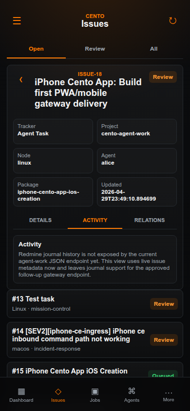
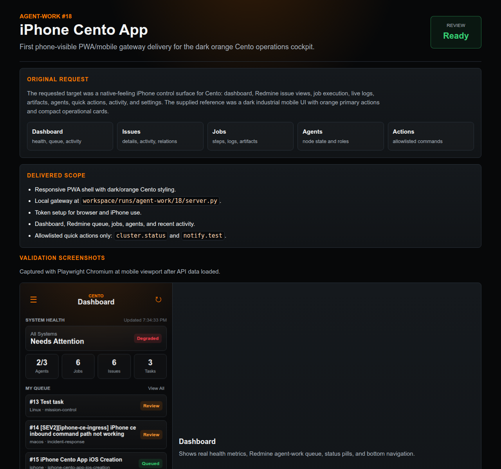

Dashboard
First screen after token setup.
Install polish · Agent-work #20
Use this page as the short checklist for opening the PWA on iPhone and adding it to the Home Screen.
http://10.0.0.56:47918/
workspace/runs/agent-work/18/state/token.txt
The gateway must be running on Linux with --host 0.0.0.0. The iPhone must be on a network path that can reach 10.0.0.56.
python3 workspace/runs/agent-work/18/server.py --host 0.0.0.0 --port 47918.workspace/runs/agent-work/18/state/token.txt.http://10.0.0.56:47918/.Reference screenshots from the validated PWA flow.
First screen after token setup.

Confirms journal endpoint pending message.

Only allowlisted live actions are enabled.

Manager-facing evidence page.